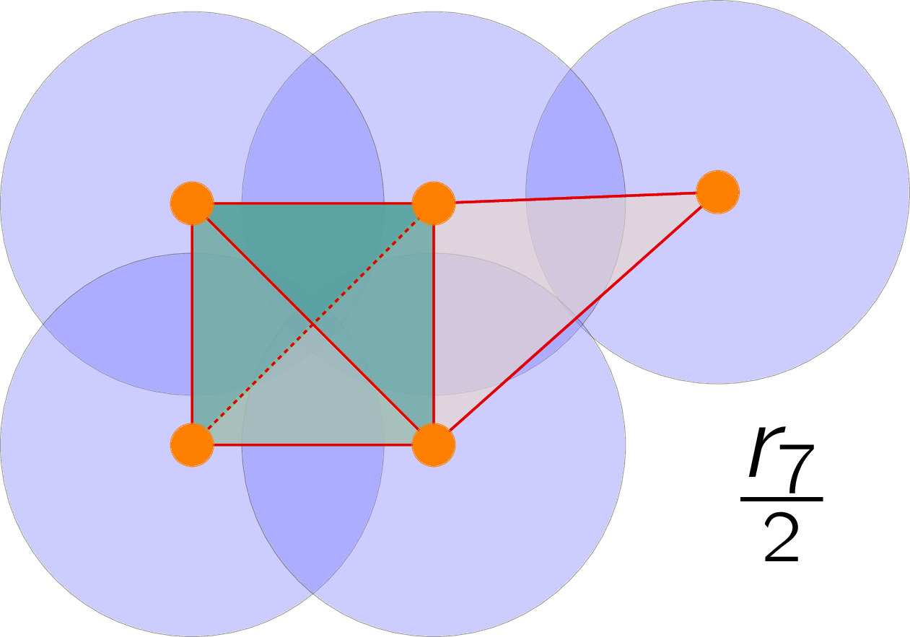
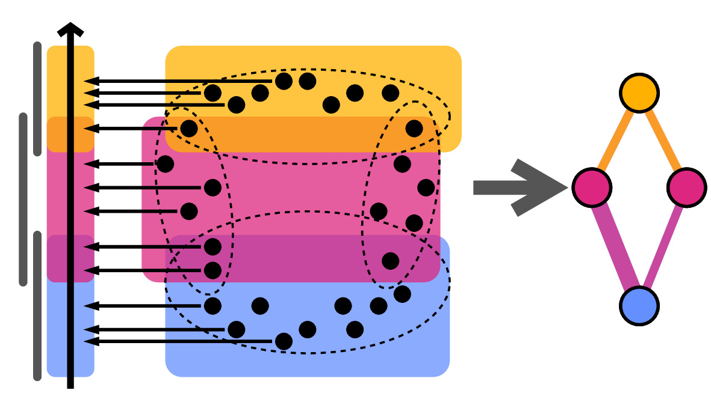

The shape of things to come
(Taken from the introduction of my doctoral dissertation)
Morphometrics background and motivation
Shape plays a fundamental role across all organisms at all observable levels. Molecules and proteins constantly fold and wrap into intricate designs inside our cells. Cells arrange into elaborate motifs to form sophisticated tissues. Layers of different tissues come together to form delicate vascular and nervous systems that sustain hands, wings, or fins. Each of these limbs evolved as part of a distinct branch of the ever-growing tree of life. From micro-biology to macro-evolutionary scales, shape and its patterns are foundational to biology. Measuring and understanding the shape is key to extracting valuable information from data, and push further our insights.
Even if we limit our scope to plant biology, a simple glance outdoors reveals a large diversity of shape among flowers, leaves, fruits, and branches. A first attempt to characterize the shape of a plant could use traditional morphometrics, describing the shape of the plant in terms of height, stem thickness, or number of branches. With these measures at hand, we could look for allometry —the relative growth of parts of an organism to the whole— and thus linearly transform biological shapes between each other. However, any given plant shape is too complex to measure it simply in terms of length, width, and branching angles.
We could use Geometric Modern Morphometrics (GMM) instead, where we first define homologous landmark points on every sample and then measure shape similarity by overlapping all these landmarks and computing their Euclidean differences. The computation of differences can be refined by rotating, translating, and scaling appropriately the landmark coordinates prior to the general overlap. This procedure, known as generalized Procrustes analysis, defines a morpho-space, or a space of all possible shapes based on all the possible landmark configurations, which allows us to define overall shape distance. The GMM approach can produce distorted results if there are not enough landmarks shared across all sampled individuals, which could occur if we attempt to compare tissues from different families.


Credits: Chitwood (2020) and Chitwood and Sinha (2016)
In the absence of corresponding sets of coordinates, we may attempt to describe the outline of the shape using Fourier analysis, by considering the outline as a harmonic series, or the sum of wave-like curves. All of the above strategies, based on either morphometrics or Fourier analysis, have proven to be extremely insightful to uncover hidden patterns that mold diverse organism shapes at genetic, developmental, evolutionary, and environmental levels. However, it is unclear how to extend this technique beyond 2D images.
Inspired by the inherent difficulties of working with 3D data, specifically X-ray CT scan imaging data, we turn to Topological Data Analysis (TDA).
Topological Data Analysis (TDA)
Topological Data Analysis (TDA) is a combination of different mathematical and computational disciplines that seeks to describe concisely and comprehensively the shape of data in a general setting. In extremely succinct terms, TDA consists of two basic ingredients and a key idea.
- 1st Ingredient: Think of the data as a collection of points, lines, faces, cubes, etc.
- 2nd Ingredient: Define a notion of distance between every pair of points.
- Key Idea: Keep track of distinct shape features that form and disappear as we connect and merge several points: connected components, holes, and voids.

The points could be atoms, biomolecultes, cells' nuclei, image pixels, or an organism itself. Distances between points could be the Euclidean, geodesic, genetic, or correlation-based. Once we have data points and distances, known formally as a metric space, we can connect these points starting with those that are closer to each other first. These ingredients and idea, albeit simple, are extremely versatile and can be adapted to a myriad of contexts and data collections. Moreover, the notion of shape presented by TDA is limited solely by the data itself, unleashing it from possible selection biases. This very adaptability and impartiality makes TDA a powerful data analysis tool that can further our insights in a variety of plant biology scenarios.
Plenty of TDA applications in the biology literature


Holes
↓
Cancerous tissue
Holes
↓
Horizontal Reassortment


Holes
↓
Open/closed conformations
Components
↓
Panicle structure
¡Published review: Amézquita et al. (2020)!

DOI: 10.1002/dvdy.175
—
As slides: Presented at the Geometry and Topology Seminar. Department of Mathematics. University of Missouri, Columbia, Missouri. October 2023.
—


——————————
Other research projects
- The intersection of Topological Data Analysis and Biology
- The early dodder gets the host
- The crackability of walnuts: all about shape, in a nutshell
- Quantification of barley grain morphology
- Global disparities in plant biology research
- Mapper to unravel the shape of omics data
- The shape of citrus fruits and modeling their oil gland distribution
- Archaeological artifact classification and the Euler Characteristic